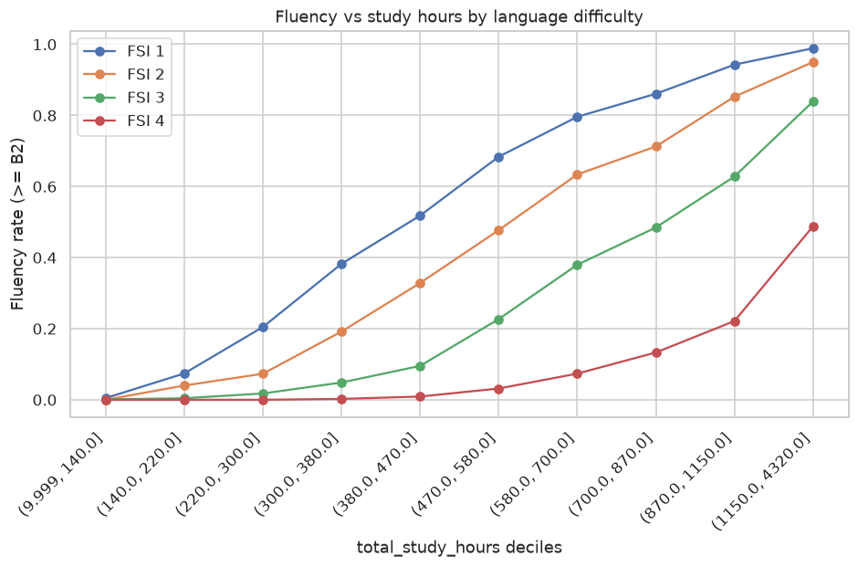
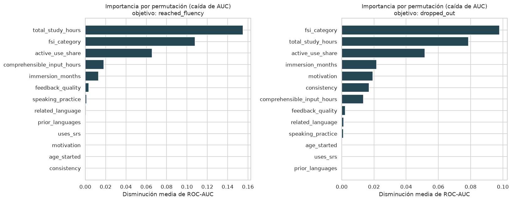
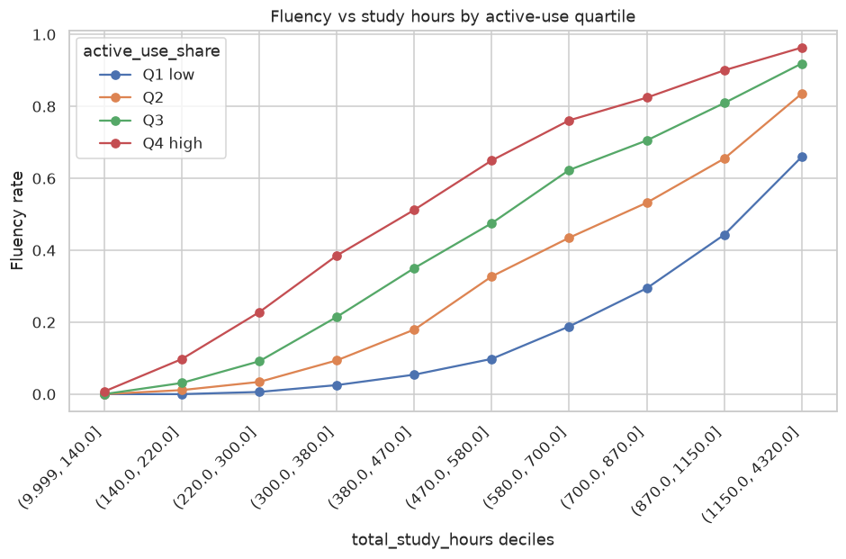
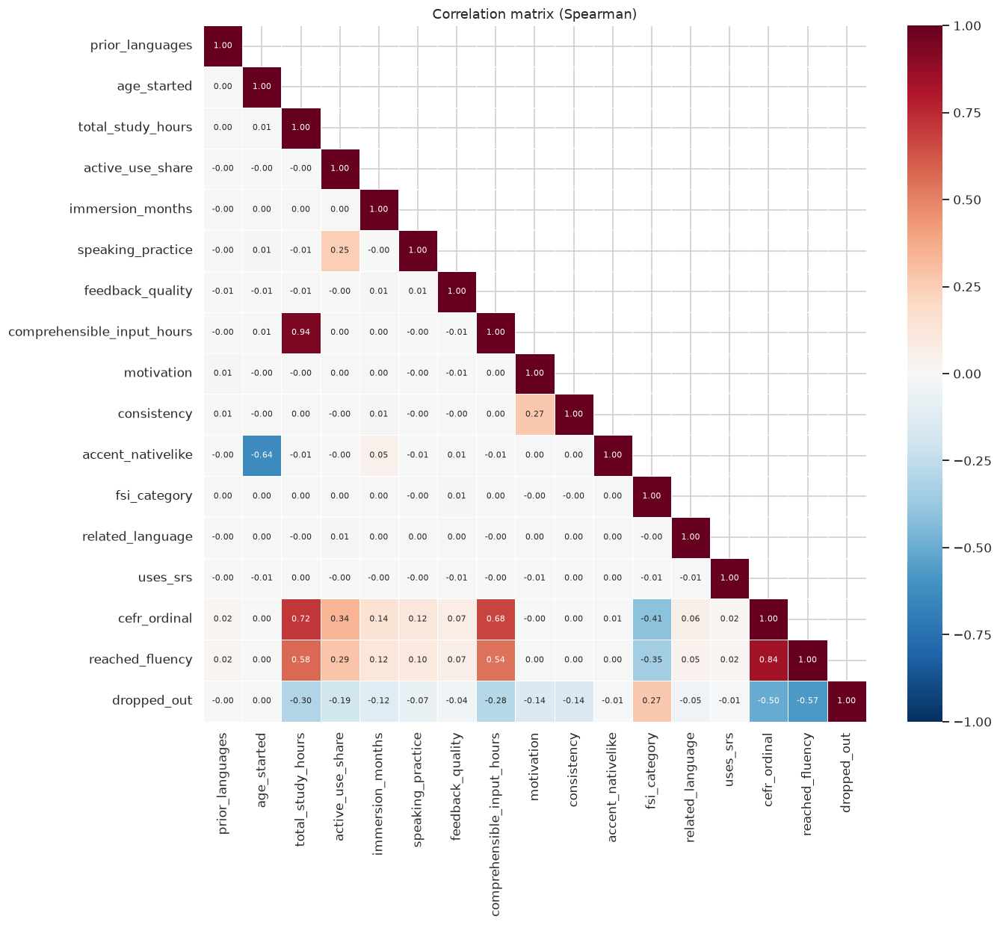

What predicts whether a language learner reaches fluency?
An exploratory analysis and baseline model on 45,000 language learners. The goal: find which factors explain reaching CEFR level B2 (fluency) and which explain quitting before getting there.
- Learners analyzed
- 45,000
- 18 variables
- Data quality
- 0 missing
- 0 duplicates · 0 out of range
- Fluency model accuracy
- 89.1%
- baseline 64.2% · +24.9 pts
- Dropout model accuracy
- 73.5%
- baseline 62.9% · +10.6 pts
The question
Language apps and schools lose a large share of learners. If we know what separates people who reach fluency from people who quit, we know where to intervene: study time, study quality, or language choice.
The data
Language Learning Fluency: study hours, language difficulty on the FSI scale (1–4),
active practice, immersion, motivation and more. Two binary targets: reached_fluency
(35.8%) and dropped_out (37.1%).
My approach
- Validated the data against its dictionary.
- Profiled distributions, outliers and correlations.
- Detected and removed a leaking feature.
- Ranked features with 3 methods: mutual information, Random Forest, permutation.
- Benchmarked models against a majority-class baseline.
Language difficulty changes everything
Share of learners who reach B2 and who drop out, by FSI category of the target language (1 = easy, e.g. Spanish; 4 = hard, e.g. Mandarin).
- Reached B2+
- Dropped out
Show data table
| FSI | Learners | Reached B2+ | Dropped out |
|---|
Key findings
- Study hours are the strongest driver. With 580–700 hours, 80% of learners reach B2 in an FSI 1 language, but only 7% in an FSI 4 language.
- Quality of practice matters, not just quantity. At the same number of hours, learners with more active practice reach fluency more often.
- Motivation predicts dropout, not fluency. Motivation and consistency show near-zero correlation with reaching B2 (ρ ≈ 0) but a clear link to quitting (ρ ≈ −0.14).
- Starting age affects accent, not fluency. Native-like accent falls from 8.0 to 3.1 out of 10 with later starts, while the fluency rate stays near 36% at every age.
-
I caught a data leak before modeling.
cefr_levelmatches the target 100% of the time, so I excluded it. Keeping it would have produced a perfect but useless model.
Selected figures
4 of 13 · matplotlib + seaborn




Next steps
Compare gradient boosting against the Random Forest, report ROC-AUC and calibration alongside accuracy, and use SHAP values to explain individual predictions.